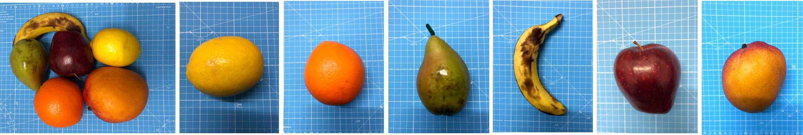
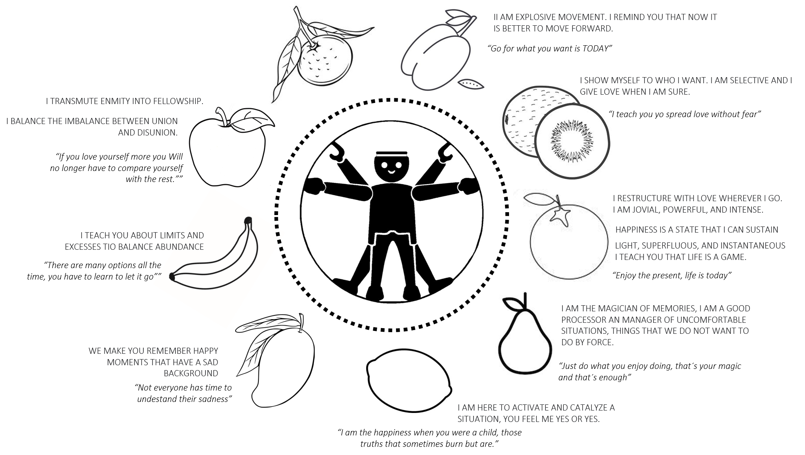
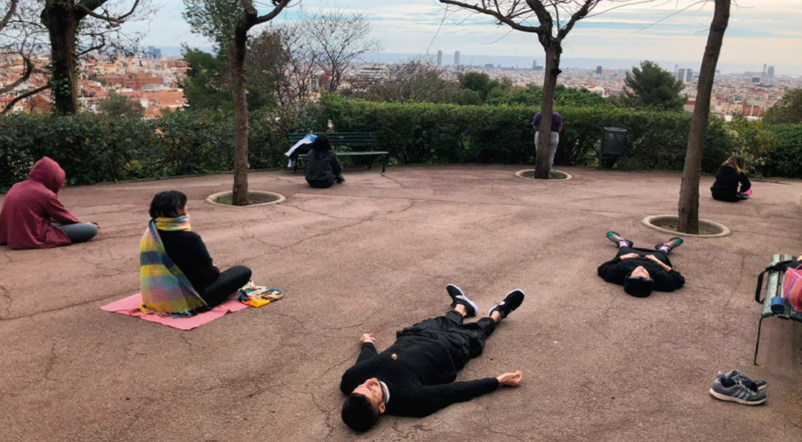
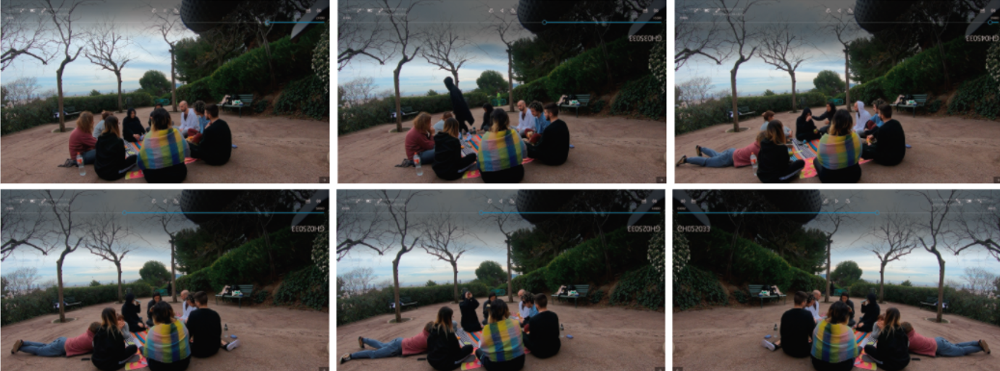
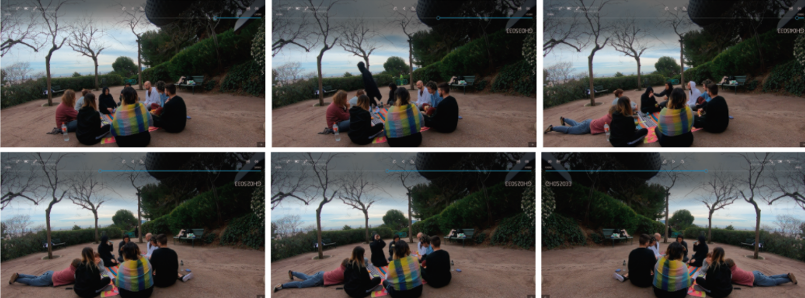
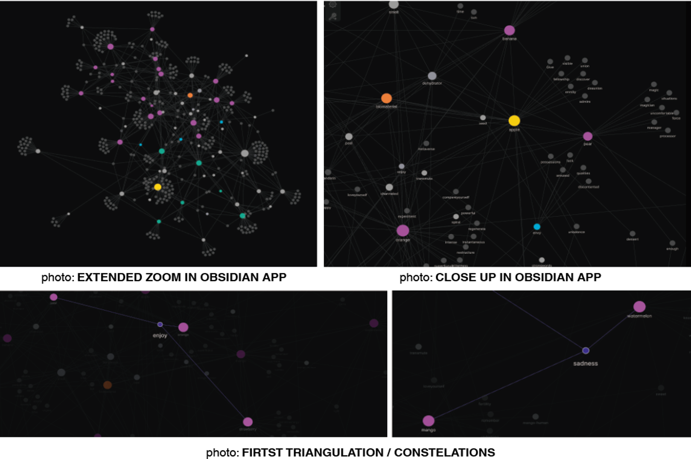

2ST INTERVENTION OF TERM 2
INTERVENTION 1 - SIDE B: HOLISTIC CONNECTION WITH FRUITS
ME AS A DESIGN TOOL IN CONTEXT
°°°°°°°°°°°°°°°°°°°°°°Love to play°°°°°°°°°°°°°°°°°°°°°°°°°°°°°°°°°°°°°°°°°°°°°°°°°°°°°°°°
°°°°°°°°°°°°°°°°°°°°°°Love fruits°°°°°°°°°°°°°°°°°
°°°°°°°°°°°°°°°°°°°°°°Channeling through Akashic Records°°°°°°°°°°°°°°°°°°°°°°°
°°°°°°°°°°°°°°°°°°°°°°Rites °° Rituals °° Offerings °° Balance °°"Pagos a la Tierra" °°°°°
°°°°°°°°°°°°°°°°°°°°°°Document everything with the methods learned and practiced°°°°°°°°°°°°°°°
°°°°°°°°°°°°°°°°°°°°°°Non-language°°°°°°°°°°°°°°°°°°°°°°°°°°°°°°°°°°°°°°°°°°°°°°°°
°°°°°°°°°°°°°°°°°°°°°°STOP YOUR MIND AND FEEL °°°°°°°°°°°°°°°°°°°°°
°°°°°°°°°°°°°°°°°°°°°°Curiosity, exploration °°°°°°°°°°°°°°°°°°°°°°°°°°°°°°°°°°°°°°°°°°°°°°°°°°°°°°°°°°°°
°°°°°°°°°°°°°°°°°°°°°°Phenomelogy°
CONTEXT
After the last term intervention "FIND YOUR SUPERPOWERS IN THE METAVERSE" - The Game of Knowing what your Magic is? I decide to define boundaries, to delimit the intervention to obtain specific outputs of what I am looking for.
THE FRUITS
Fruits remind us of experiences through their smells, or when we eat them consciously or unconsciously. What are the messages that we feel when we interact with them? Why do we chosse the one we are choosen?
The question was MANGO / MANDARIN / ORANGE / APPLE / PLUM / KIWI / PEAR / BANANA / LEMON / WHAT IS THE MESSAGE THAT YOU HAVE FOR US TO ALIGN WITH OUR SUPERPOWERS?
They answered and with that information I started the intervention once again.
BEYOND THE SENSE
The intervention is about the METHAPYSICS OF COGNITIVENESS of the participants.
I gather these phenomenas using ethereal tools to collect their cognitive process when they connect with the materiality of the beings, in this intervention: the smells of the fruits.
The objective is the self-knowledge of the participants, to generate a pause in their day to question themselves and sensitize the senses during the experience because of the information given.
In addition, speculate with the bifurcation and relations of beings (in this intervention: fruits) in materiality and spirit.
The experience is open to whatever emerges from it without focusing on a specific output.
THE INTERVENTION
The invitation was open to people related to holistic practices, like astrologers, reiki healers, seers, family constellators, and holistic artists.
Once the experience is presented, each participant chooses a fruit and uses it as an avatar, and sticks to the fruit's feelings and symbols they wanted.
One by one, the participants cover their eyes with a blindfold to avoid distractions from other senses and only smell and feel the fruit by touch.
After that, each participant receives a message about their gift and their talent using ethereal tools. And, they receive a message from the fruit they pick as an activator or unblock their gift or talent.
Some of them express their feelings about what they felt.
As homework, each participant will deepen their connection with the fruit and deliver a series of words, phrases, in general, whatever they feel about the shared experience. And explain what is the link with the fruit they embodied.
At the end of the experience, each participant adds or express how the experience might evolve, and mutate according to their fields of experience in holistic practices.

Later on, each participant, one by one, wears a blindfold and smell the fruit while they are receiving the message. Some of them express their feelings about what they felt.
As a homework, each participant will deepen their connection with the fruit and deliver a series of words, phrases, in general whatever they feels about the shared experience. And explain what is the link with the fruit they embodied.
DOCUMENTATION

 

DOCUMENTATION OF ONE OF THE PARTICIPANTS
THE COLLECTING DATA
The first data collected is all the gifts and talents received through ethereal tools. They are collected as a handmade drawing with a short specification. And the next data is the experiences of all the participants in this intervention and some people that wanted to be part of the investigation. The one subjects were in an individual process, and they are not related to the holistic field, and they don´t require to have the fruits as an avatar. In order to visualize the information in an organized way, I use Obsidian App to find triangulations or constellations that are helping me in these findings. Furthermore, as a recommendation of the holistic participants, they suggest I link the feedback with Astrology, Numerology, and Reiki.
 FEEDBACK FROM HOLISTIC COMMUNITY
+ They loved the experience.
+ Two people get very emotional when they received the messages.
+ Two of them said, the experience can turn around as a physical game to show how each of us can use our gifts or
talents to embody and complete the experience from the metaverse to the physical plane.
+ They ate the fruit as a final step of the experience.
+ One of them started collecting the seeds of the fruit with which she had to connect to start growing, and, get deepen with the teaching it has to her.
+ One of them wanted to start a compost process because of gratitude to earth and fruits.
+ They are asking for more types of experiences with senses.
+ Some of them are interested in replicating the experience with guests of the next open day house.
+ They invited me to join to the Holistic House they are part of.
FEEDBACK FROM NOT HOLISTIC COMMUNITY
+ From Emilio, a classmate, I still, remember the first intervention because of the toy avatars,
I can remember how the gadgets looked, and it made me reflect on what I need to perform in life to align myself in life.
+ It worked as a holistic experience because people who relate to the same feel got involved and was very touch.
However, as a reasercherer project, I am still requiring more data to generate more triangulations and reflect on what outputs
I can generate around that.
+ Some of the triangulations and constellations from Obsidian App, started to show connections between some of the fruits with
certain adjectives or noon relate to the subjects. However, the investigation requires more subjects.
+ Having the links from the subjects to astrology and numerology has been a help to the triangulation process.
Otherwise, many more research subjects and possibly fewer variables (such as fruits) are
Stay tune. I am open to intangibles channels in a sensible manner and not conscious.
+ It is like making conscious the unconsciousness.
+ Some of the participants are willing to continue with the questions, or to continue providing information for self-knowledge.
+ Some of them change the perception of the senses and what is beyond that. They started a meaningful connection with
the others, humans, and non-humans.
RESULTS
+ It worked as a holistic experience because people who relate to the same feel got involved and was very touch.
However, as a reasercherer project, I am still requiring more data to generate more triangulations and reflect on what outputs
I can generate around that.
+ Some of the triangulations and constellations from Obsidian App, started to show connections between some of the
fruits with certain adjectives or noon relate to the subjects. However, the investigation requires more subjects.
+ Having the links from the subjects to astrology and numerology has been a help to the triangulation process. Otherwise,
many more research subjects and possibly fewer variables (such as fruits) are needed.
+ Two people, not from the holistic community, was that attached to the process that they still continue sending data
related to the experiences. even though the experience was weeks ago.
+ Some people wanted to eat the fruits others not because of the manipulation of them by other humans, and possible non-humans,
for instance, insects.
NEXT STEPS
+ There is a possibility to generate objects with the essence that emerged from the experience.
Or, as I want to call them: magical artifacts.
+ It is essential continue with more interventions and go more deepen with the investigation. Moreover,
I will continue the experience but as a mini-experience for people but one by one. Trying to reduce holistic time due to the
added time that it always requests a practice like this.
+ Try to connect each participant non-holistic in the same direction as the holistic ones and generate more variable connections
and possible outputs.
+ Understand the human cognitive process from the side of metaphysics to have different types of feedback.
+Integrate the intervention from the first temr with these intervention and make it evolve.
+Ask to experts to be part of the experience and generate and exchanges of practices.
REFLECTIONS
+ If fruits can generate outputs, can it go in the oposite direction and generate new fruits?
+ How can I activate these smells or connections with the fruits for my personal practices and embody the experience from another personal perspective?
+ How can I document the phenomenology of people sense?
+ With the same protocols, Do other people might generate the same experience to collect data, do that might affect my process or investigation?.
+In the long term, the cognitive process might evolve in the humans, how can I still be connected with them, and how this subject evolves by being part of the experimentation.
REFLECTIONS ON THE EVOLUTION OF THE INTERVENTION
+ The avatars from the intervention from the first Term help participants remember even though it happen seis months ago. This is a situation that not is happening with the fruits as avatars.